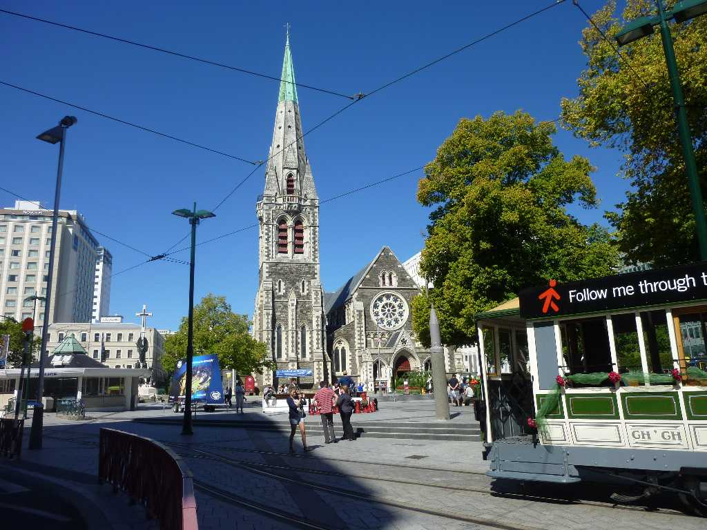
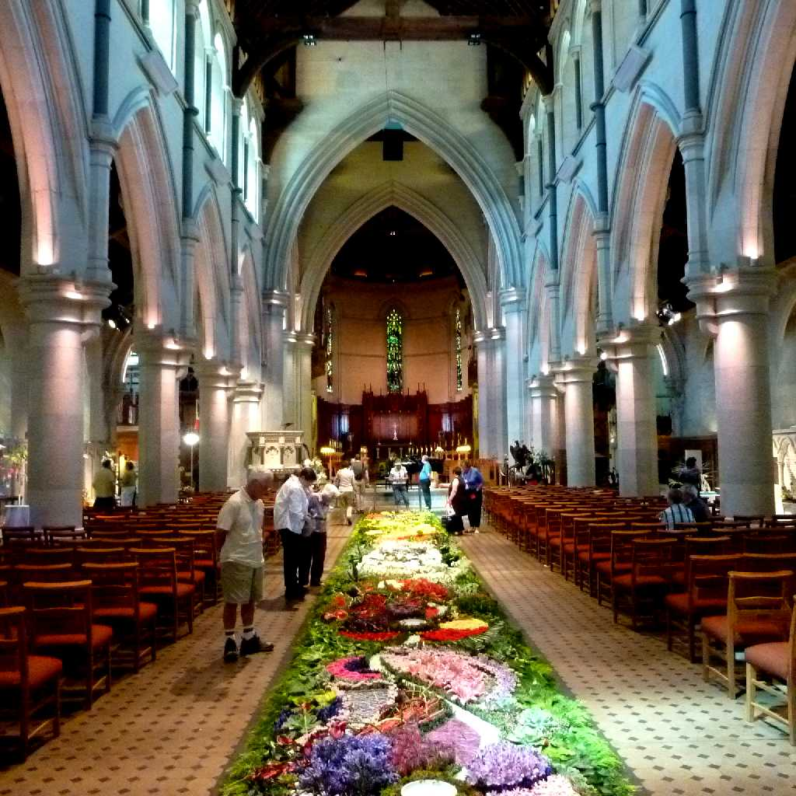
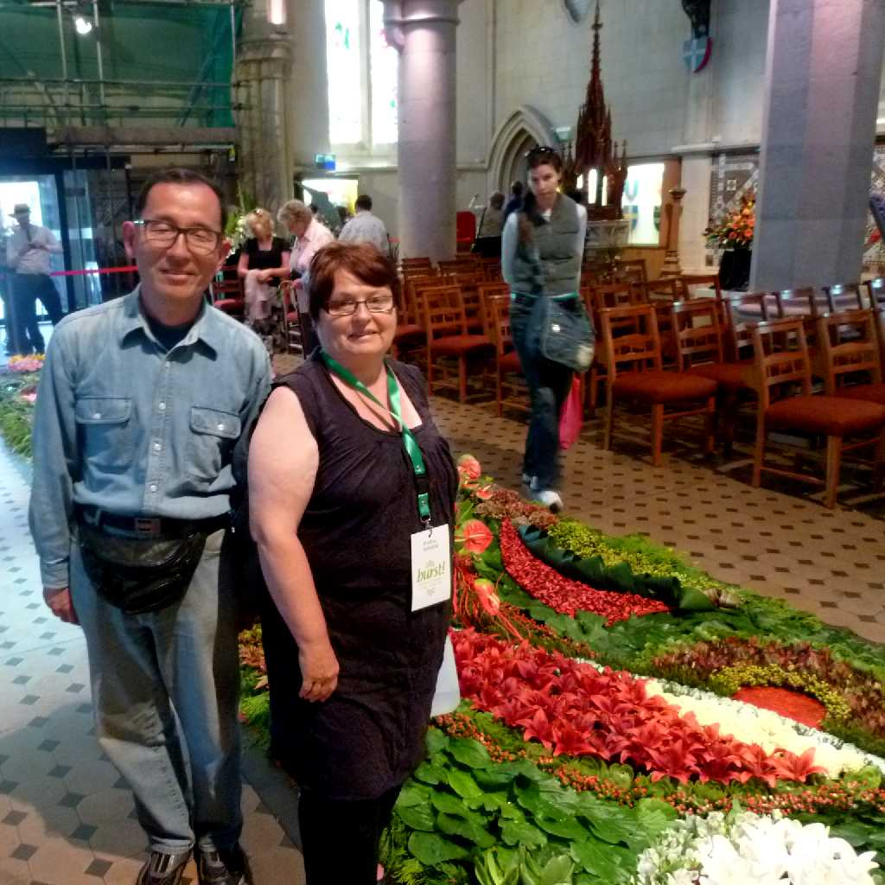

Christchurch
１９世紀半ばに入植したイギリス人の多くがオックスフォード大学クライストチャーチカレッジの出身者であったことから命名された街は英国風の建物が並ぶイギリス以外で最もイギリスに近い街と云われている

February 15 2011 Flower Festival Christchurch
７００以上の公園がある公園都市と云われるクライストチャーチの花祭りで２０１１年の教会内の花絨毯をデザインした方と記念写真